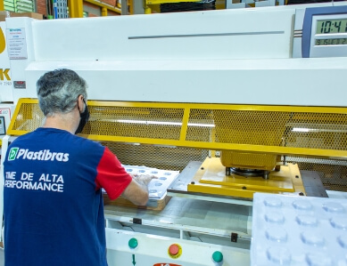

Artigo Técnico: Injeção vs Vacuum Forming no Setor Automotivo
A escolha do processo de fabricação de componentes plásticos impacta diretamente custo, prazo e qualidade no mercado automotivo.
Ler artigo
Termoplásticos: A Revolução Sustentável na Indústria de Plásticos
A indústria de plásticos está em constante evolução, impulsionada por avanços tecnológicos e uma crescente preocupação com a sustentabilidade ambiental.
Ler artigoPlásticos Biodegradáveis: a Solução para Embalagens Sustentáveis
Conheça as alternativas biodegradáveis e compostáveis que estão transformando o mercado de embalagens plásticas no Brasil e no mundo.
Ler artigoSustentabilidade na Indústria do Plástico: Transformando o Futuro
Como as práticas sustentáveis estão transformando a indústria plástica e criando novas oportunidades para empresas que se adaptam.
Ler artigo
Como Escolher a Melhor Empresa de Injeção de Plásticos Para Seu Projeto
Os critérios essenciais que você deve avaliar antes de contratar um fornecedor de injeção plástica: qualidade, capacidade, certificações e prazo.
Ler artigo
Injeção de Plásticos: Versatilidade para Diversos Setores
A injeção plástica está presente em praticamente todos os setores da indústria. Descubra como cada segmento utiliza esta tecnologia.
Ler artigo
Embalagem Blister: a Proteção Ideal para Brinquedos
A embalagem blister protege e valoriza brinquedos no ponto de venda, combinando transparência, segurança e apelo visual para maximizar as vendas.
Ler artigo
Os Benefícios da Injeção Plástica na Indústria
Quais são as vantagens concretas que a injeção plástica traz para a indústria? Precisão, velocidade, custo e flexibilidade detalhados neste artigo.
Ler artigo
Vacuum Forming: Como Funciona o Processo de Termoformagem
Entenda o processo de termoformagem a vácuo do início ao fim: aquecimento, conformação, resfriamento, corte e aplicações industriais.
Ler artigo
Injeção de Plásticos: Como Funciona o Processo
O guia completo sobre o processo de injeção plástica: desde a matéria-prima até a peça acabada. Entenda cada etapa com clareza técnica.
Ler artigoO Que São Termoplásticos e Quais os Tipos Existentes?
PP, PE, PVC, ABS, PA... entenda as diferenças entre os principais termoplásticos, suas características e para quais aplicações cada um é mais adequado.
Ler artigoDesvendando os Mitos: A Verdade Sobre os Plásticos e Sua Sustentabilidade
Muitas crenças sobre o impacto ambiental dos plásticos não resistem à análise técnica. Descubra o que é mito e o que é fato sobre os plásticos e o meio ambiente.
Ler artigo